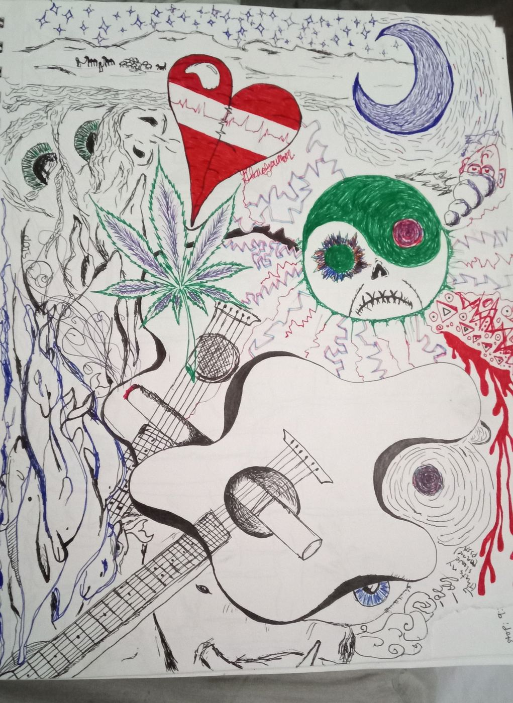
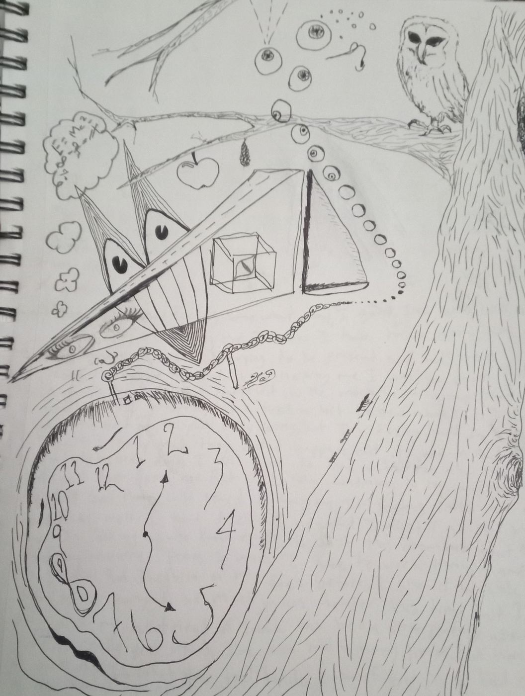
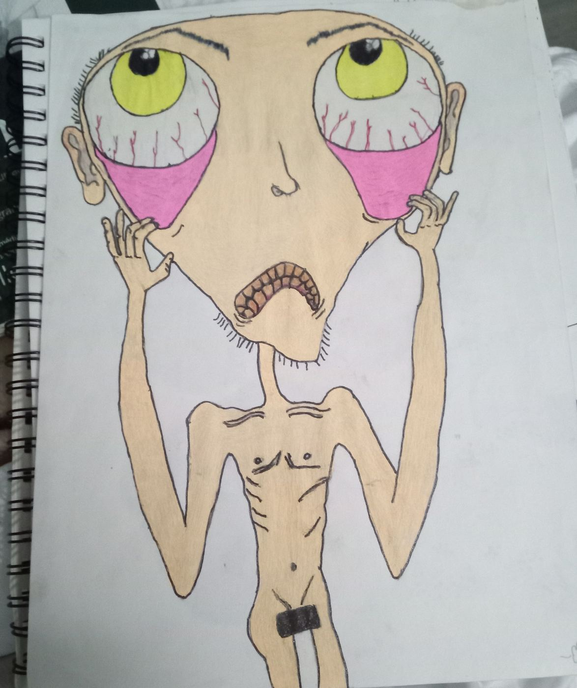
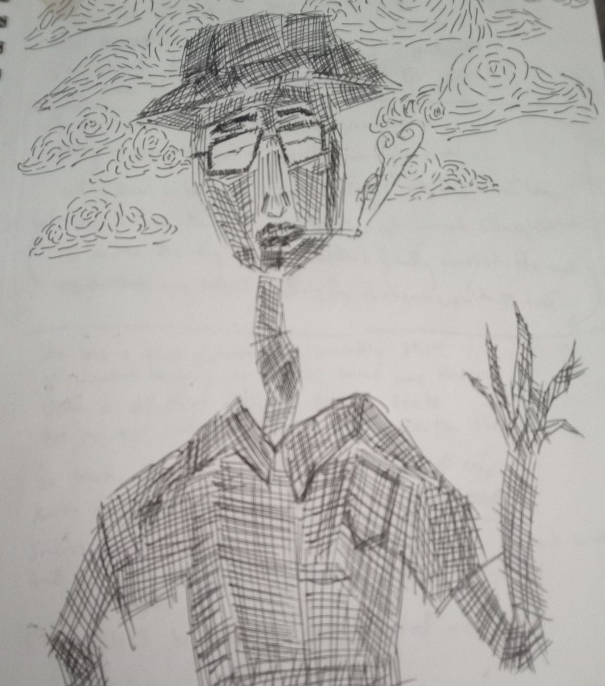
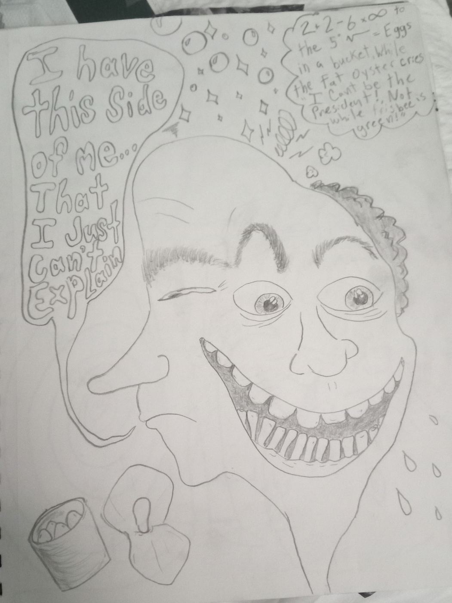
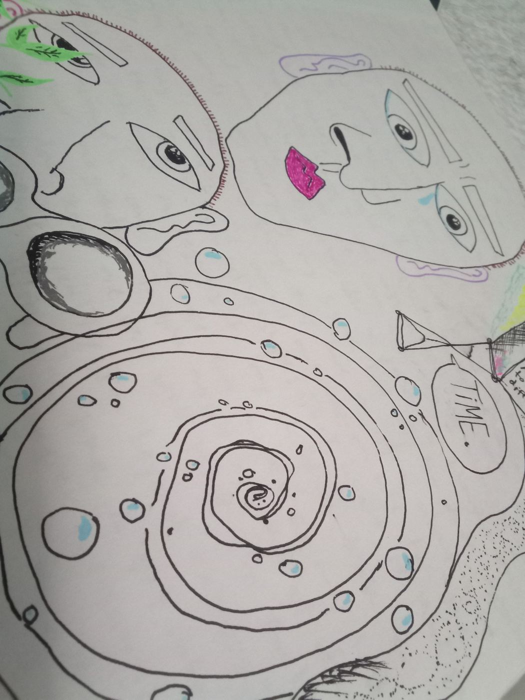
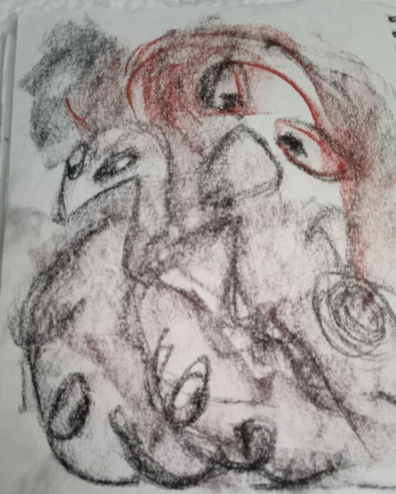
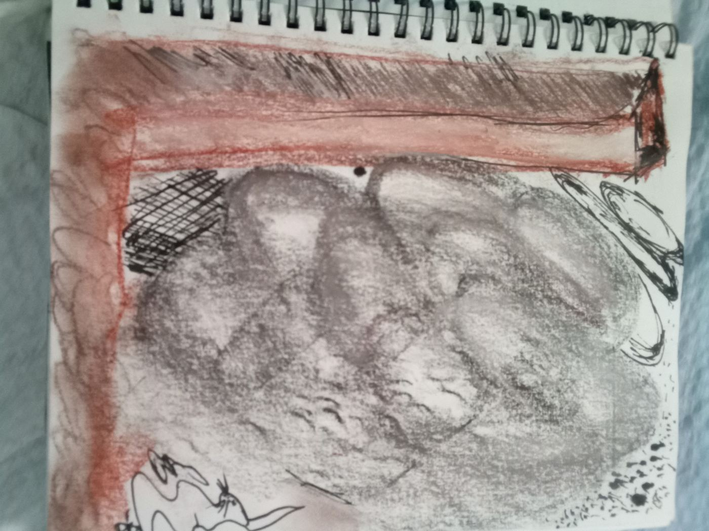
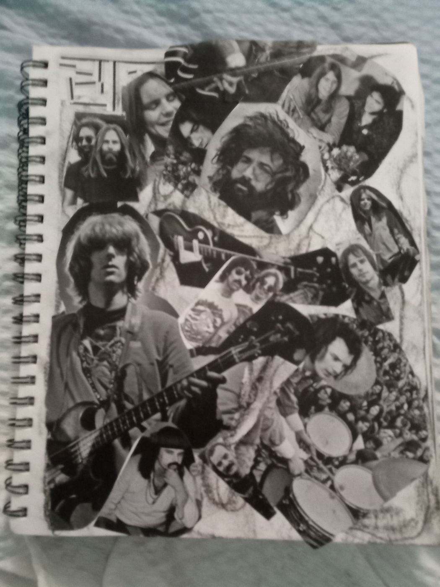
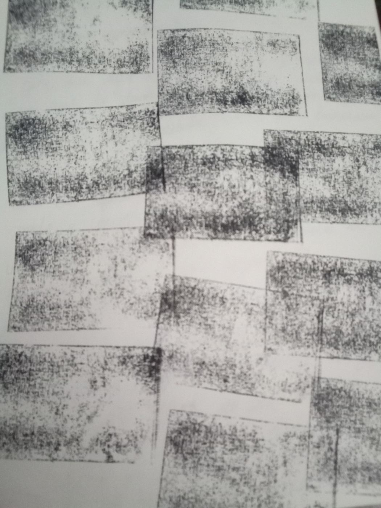

About
I'm an artist first and foremost, ever since I could hold a crayon and had a piece of paper. I started with basic freehand drawing and watercolor in elementary school, moved into digital art and photography by junior high — but nothing compares to a blank canvas and paint, or the right pencil.
Skateboarding came later and shaped a lot of my personality. Art runs deep in my family too, and I'd like to follow in my grandpa's footsteps. I'm currently working toward my art degree at Cuesta College.
Most of my work is off the beaten path. It always has a meaning, but that's left up to you to decide. Thank you for taking interest in my mind.
Gallery










Contact
Have a request, or interested in an original piece? Reach out — prices available on request.
Email Eddie